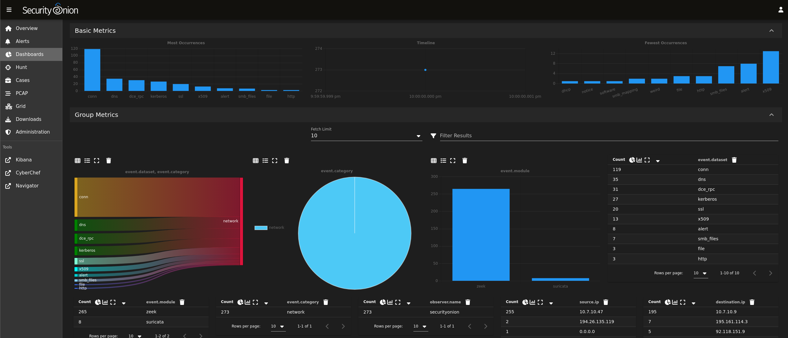

Explore my portfolio, a collection of cybersecurity projects that range from malware
traffic analysis and threat hunting to the configuration of diverse home lab environments with
a focus in blue team
operations.

Conducting in-depth network traffic analysis to identify malicious activity, classify IOCs using
threat intelligence, and pinpoint infected hosts across various network environments, resulting
in
comprehensive incident reports.
- Featured Tools -
Packet Analysis: Wireshark, Network Miner
Network Security Monitoring: Security Onion, Zeek, RITA, Suricata
Threat intelligence: Mitre ATT&CK, VirusTotal, URLHaus, MalwareBazaar, Any.Run

By leveraging various virtualization platforms and operating systems, I deploy and configure
diverse network environments to exercise a versatile skillset ranging from threat detection with
SIEM and EDR solutions to vulnerability management.
- Feautured Tools -
Threat Hunting: AC-Hunter
Vulnerability Scanners: Nessus Essentials, OWASP ZAP
Operating Systems: Windows, Kali, Kali Purple, Security Onion
SIEM & EDR Solutions: Wazuh, Microsoft Sentinel, LimaCharlie

A collection of Python scripts designed to simulate the functionality of malicious tools as well
as
automate various networking, penetration testing and ethical hacking tasks.

Scouting and perfomance reports from various CTF competitions showcasing proficiency in skills
such as
Open Source Intelligence, Cryptography, Password Cracking, Log Analysis, Network Traffic
Analysis,
Forensics, and Web Application Exploitation.